On his last day of the Asian summit season, Turnbull had a 30-minute meeting with Trump at the president’s hotel suite. The two leaders had originally planned to meet for a private dinner on Monday night, but it was rescheduled because the pair had met earlier in the day. No officials were present at the meeting.
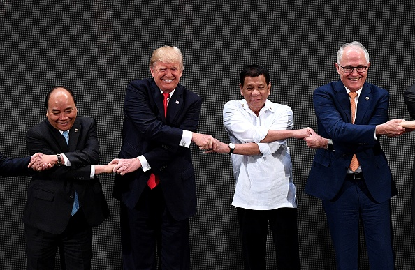
Getty Images
Where: Manila, Philippines
Type: Sideline meeting (ASEAN)
Turnbull held a trilateral meeting with Trump and Japan’s Shinzo Abe on the sidelines of the ASEAN Summit – the first such trilateral since 2014. The leaders reiterated their shared “fundamental values” and “strategic interests” and emphasised their cooperation on dealing with North Korea. On trade, Trump noted that the United States had deficits with “almost everybody”, to which Turnbull quipped, “Except us!”
Where: Hamburg, Germany
Type: Informal (G20)
Turnbull and Trump attended the G20 Summit where North Korea, trade, and terrorism topped the agenda. Turnbull and his wife, Lucy, joined the Trumps in ‘The Beast’ – the US President’s heavily armoured car – in which the two leaders had a “good private discussion”.
Where: USS Intrepid, New York, United States
Type: Official bilateral (United States)
Malcolm Turnbull’s first meeting with Donald Trump was aboard the USS Intrepid in commemoration of the 75th anniversary of the Battle of the Coral Sea. The pair held a 45-minute private meeting after an initial delay of almost three hours, as Trump had remained in Washington as a bill to repeal and replace Obamacare passed the House of Representatives. The leaders had a press conference where they played down the tensions from their infamous phone call in January. Trump labelled Australia as “one of the great, great places” and announced that he would “absolutely” visit Australia as President.
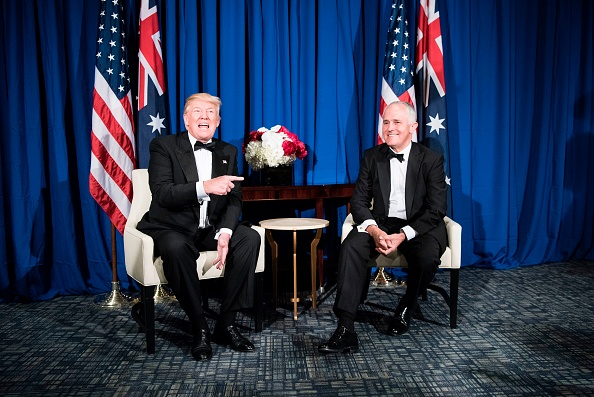
Getty Images
President Trump was inaugurated on 20 January 2017
Where: Lima, Peru
Type: Sideline meeting (APEC)
On his final overseas trip as President, Barack Obama held a 50-minute meeting with Turnbull on the sidelines of the APEC Summit in Peru. The leaders discussed trade and foreign policy, with Turnbull reportedly eager to gauge Obama’s expectations of changes in US economic and security policy under the Trump administration. Turnbull concluded the interaction with a selfie.
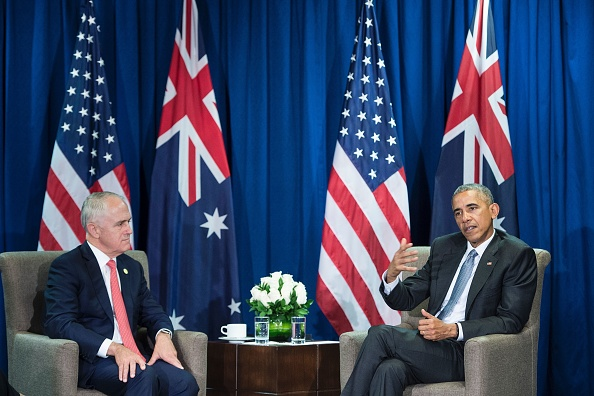
Getty Images
Turnbull and Obama attended the East Asia Summit in Vientiane.
Where: Hangzhou, China
Type: Informal (G20)
Turnbull and Obama managed a brief greeting at the G20 Summit in China.
The Turnbull Government was re-elected on 2 July 2016
Where: Oval Office, Washington DC, United States
Type: Office bilateral (United States)
This was Turnbull’s first trip to Washington as prime minister. During his two-day visit he delivered the national security address at the Center for Strategic and International Studies, held a working dinner with Congressional leaders, and was invited to stay at the President’s guesthouse, an honour that had not been extended to Tony Abbott. Turnbull had a 90-minute meeting followed by lunch at the White House with the US President. Both leaders reiterated the strength of the US-Australia alliance, with Obama noting that he was “grateful for our friendship” and Turnbull highlighting that “right across the board, we have so much in common.”
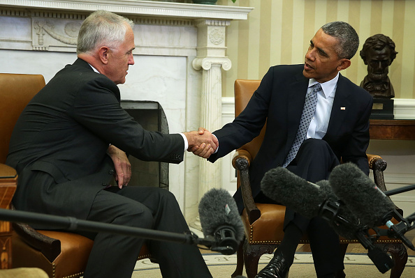
Getty Images
Where: Paris, France
Type: Informal (Paris Climate Conference)
Both Turnbull and Obama attended the 21st session of the Conference of the Parties (COP 21) for the United Nations Climate Change Summit.
Where: Kuala Lumpur, Malaysia
Type: Informal (ASEAN/East Asia Summit)
Turnbull and Obama attended the ASEAN and East Asia Summits in Malaysia. The South China Sea figured prominently, with leaders expressing “serious concerns” over developments in the region that “have resulted in the erosion of trust and confidence”.
Where: Manila, Philippines
Type: Sideline meeting (APEC)
Turnbull’s first formal meeting with Obama occurred on the sidelines of the 2015 APEC summit in Manila. The leaders had a “lengthy discussion” on issues including the Trans-Pacific Partnership, a unified response to ISIL, and the importance of freedom of navigation and maritime rules. Both leaders were resisting strong domestic pressures to commit more troops to Syria following terrorist attacks in Paris. Obama extended an invitation to Turnbull to visit the White House.
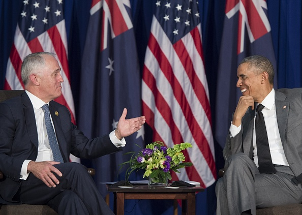
Getty Images
Where: Antalya, Turkey
Type: Informal (G20)
The G20 Summit in Turkey was the first opportunity for Turnbull and Obama to work together.
Malcolm Turnbull successfully challenged Tony Abbott for the leadership of the Liberal Party and was sworn in as Prime Minister of Australia on 15 September 2015
Where: Brisbane, Australia
Type: Sideline meeting (G20)
Abbott and Obama met with Japan’s Shinzo Abe for a trilateral meeting on the sidelines of the G20 Leaders’ Summit in Brisbane. According to the joint media release, the main topics of discussion included how to defeat ISIL and ending the Ebola outbreak, with the leaders also united in opposing Russia’s destabilisation of Ukraine. Tensions surfaced over climate change: Obama announced a $3 billion commitment to the Green Climate Fund at a speech at the University of Queensland, while Tony Abbott spoke of his repeal of Labor’s carbon tax in a speech to world leaders, including Obama.
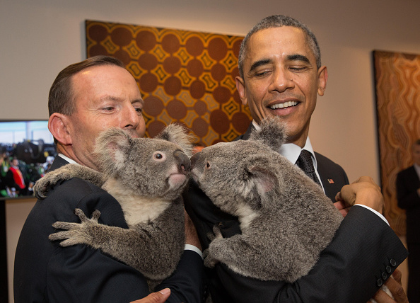
Getty Images
Where: Naypyidaw, Myanmar
Type: Informal (ASEAN/East Asia Summit)
Abbott and Obama attended the ASEAN and East Asia Summits in Myanmar.
Where: Beijing, China
Type: Sideline meeting (APEC)
Obama held a bilateral meeting with Abbott on the sidelines of APEC. They discussed the coalition against ISIL and the importance of the upcoming G20 Summit.
Where: New York City, United States
Type: Informal (United Nations Security Council)
Abbott participated in a meeting at the United Nations Security Council convened by Obama, which focussed on the war against ISIL.
Where: Oval Office, Washington DC, United States
Type: Official bilateral (United States)
Obama hosted Abbott in the Oval Office during the Australian leader’s first United States visit as prime minister. Abbott followed in the footsteps of Julia Gillard and Kevin Rudd by meeting with Rupert Murdoch in New York before heading to the White House. Key topics of discussion in the bilateral meeting included additional agreements around force postures and the need to push towards finalisation of the Trans-Pacific Partnership, while the leaders took different approaches to climate change.
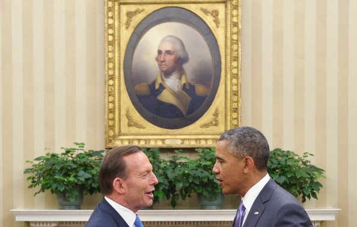
Getty Images
Tony Abbott led the Coalition to victory in the federal election and was sworn in as Prime Minister on 18 September 2013
Kevin Rudd successfully challenged Julia Gillard for the leadership of the Labor Party and was sworn in as Prime Minister of Australia on 27 June 2013
President Obama was inaugurated President for the second time on 20 January 2013
Where: Phnom Penh, Cambodia
Type: Informal (East Asia Summit)
This was Gillard’s first meeting with Obama since he was re-elected to a second term. Gillard sat next to Obama at the meeting and had a “wide-ranging discussion” with the President.
Where: New York City, United States
Type: Informal (United Nations General Assembly)
Gillard and Obama both addressed the United Nations General Assembly in New York.
Where: Los Cabos, Mexico
Type: Informal (G20)
Gillard and Obama attended the G20 Summit in Mexico and shared a light-hearted moment during the official photograph.
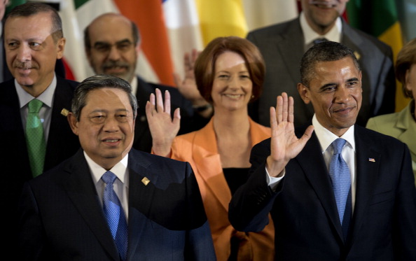
Getty Images
Where: Chicago, United States
Type: Informal (NATO)
Obama hosted a NATO Summit in Chicago where Julia Gillard called on world leaders to fund Afghanistan’s security forces.
Where: Seoul, South Korea
Type: Informal (Nuclear Security Summit)
Gillard and Obama spoke informally before the working dinner in Seoul.
Where: Bali, Indonesia
Type: Informal (ASEAN/East Asia Summit)
Gillard and Obama attended the East Asia Summit, where the pair managed a short greeting. This was the first time a US President had attended the East Asian Summit.
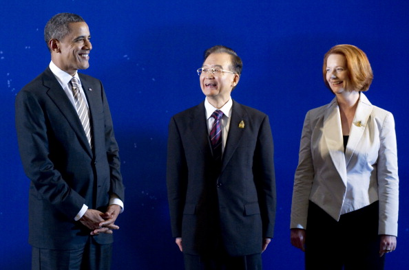
Getty Images
On his first visit to Australia as president, Obama and Gillard discussed trade liberalisation and announced that 2,500 US Marines would be stationed in Darwin on a rotational basis under the US-Australia Force Posture Agreement. He addressed the Australian Parliament in Canberra where he declared that “the United States is a Pacific power” and is “here to stay” – an indication of his ‘pivot’, later ‘rebalance’, to Asia. Obama condemned the Chinese government’s suppression of its citizens’ political rights and visited an air force base in Darwin, where he addressed US Marines and Australian troops.
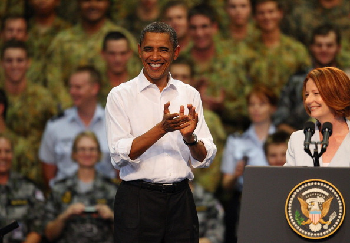
Getty Images
Where: Honolulu, United States
Type: Sideline meeting (APEC)
Gillard and Obama met at the APEC Summit in Hawaii amidst concerns over America’s commitment to the Trans-Pacific Partnership. Gillard stated that Obama remained committed to the trade deal and the two leaders met to discuss the partnership.
Where: Cannes, France
Type: Informal (G20)
Gillard received a warm welcome from Obama while the two were attending the G20 Summit in Cannes.
Where: Oval Office, Washington DC, United States
Type: Official bilateral (United States)
Obama welcomed Gillard to the White House where they had a private meeting and a press conference. The Australian Prime Minister gave a speech to a joint sitting of Congress marking the 60th anniversary of the ANZUS Treaty. Gillard also paid tribute to Vietnam veterans at a war memorial, visited a high school in Virginia, and kicked an Australian football in the Oval Office with the President.
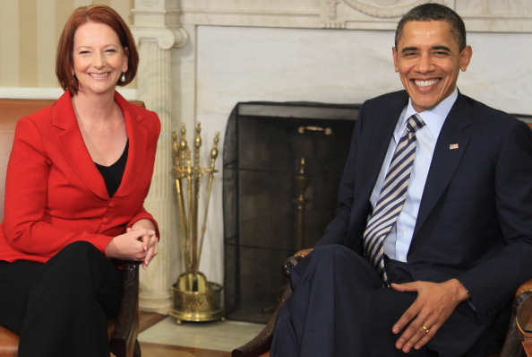
Getty Images
Where: Lisbon, Portugal
Type: Informal (NATO)
Gillard and Obama both attended the NATO Summit in Lisbon.
Where: Yokohama, Japan
Type: Sideline meeting (APEC)
Gillard and Obama held their first formal talks while attending the 2010 APEC Summit in Japan. During the 35-minute meeting, the pair discussed the future strategy in Afghanistan, reaffirmed their commitment to the Copenhagen climate change agreement, and agreed that the United States should continue to deepen its engagement in the Asia-Pacific.
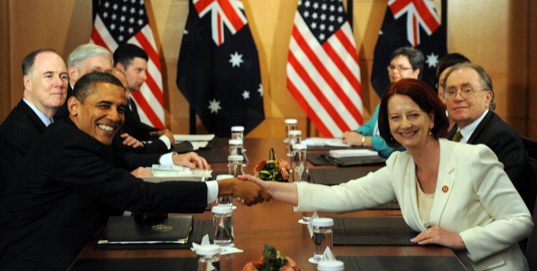
Getty Images
Where: Seoul, South Korea
Type: Informal (G20)
Gillard noted that she had a few brief discussions with Obama at the G20 Summit and said that the two countries are “great mates.”
Julia Gillard led the Labor Party to victory in the federal election and was sworn in as Prime Minister on 14 September 2010
After the resignation of Kevin Rudd, Julia Gillard was elected leader of the Labor Party and was sworn in as Prime Minister on 24 June 2010
Both Rudd and Obama attended the Climate Change Summit in Copenhagen.
Where: Oval Office, Washington DC, United States
Type: Official bilateral (United States)
Kevin Rudd met with Obama in the Oval Office to discuss Afghanistan, the global financial crisis, nuclear non-proliferation, and the upcoming Copenhagen conference.
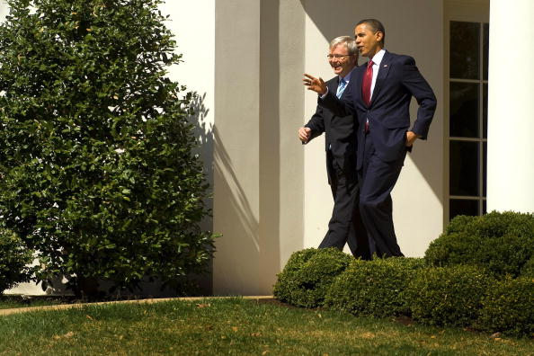
Getty Images
Where: Singapore
Type: Informal (APEC)
Rudd sat next to Obama at the APEC Summit in Singapore.
Both Rudd and Obama gave speeches at the United Nations General Assembly, emphasising the need to use the G20 as a leading force to counteract the global economic collapse.
Rudd attended the G20 Summit with Obama, for whom it was the first overseas trip as president.
Where: Oval Office, Washington DC, United States
Type: Official bilateral (United States)
Rudd had a 70-minute meeting with Obama in their first face-to-face at the Oval Office, which Obama described as “a great meeting of the minds”. The global economic crisis dominated the consultation, with other major issues including Afghanistan, climate change, and nuclear non-proliferation also high on the agenda. Rudd arrived in Washington just two months after Obama’s inauguration – he was one of the first foreign leaders to meet the new president.
President Obama was inaugurated on 20 January 2013
Where: Lima, Peru
Type: Informal (APEC)
Rudd and Bush attended the CEO Summit at APEC.
Where: White House Dinner, Washington DC, United States
Type: Informal (G20)
Rudd flew to Washington amid tensions following a media report that Bush had asked a “stunned” Rudd “what’s the G20?” during a phone call in October. While Rudd denied that Bush had made the comments, relations were tense at the White House prior to the G20 Summit in Washington.
Where: Bucharest, Romania
Type: Informal (NATO)
Rudd caused a domestic stir after saluting Bush when the pair met informally at the NATO Summit.
Where: Oval Office, Washington DC, United States
Type: Official bilateral (United States)
Rudd’s first face-to-face meeting with Bush took place in the Oval Office. Rudd declared that Australia would be “in Afghanistan for the long haul” and confirmed a $165 million assistance package to Iraq. Iran and climate change were also on the agenda.
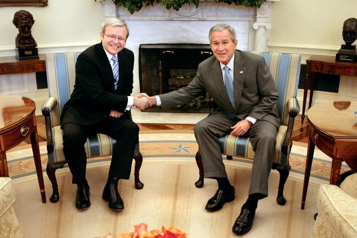
Getty Images
Kevin Rudd led the Labor Party to victory in the federal election and was sworn in as Prime Minister on 3 December 2007
Where: Sydney, Australia
Type: Sideline meeting (APEC)
Bush spent four days in Sydney in September 2007 for the APEC Summit. Howard hosted Bush on a boat tour around Sydney Harbour and the pair had a luncheon at the Royal Australia Navy Heritage Centre days before the summit began. They signed a Defense Cooperation Treaty at the Commonwealth Parliament Offices before attending the APEC summit later in the week. The pair also held trilateral talks with Japan’s Shinzo Abe.
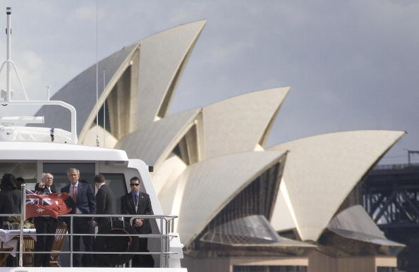
Getty Images
Where: Hanoi, Vietnam
Type: Sideline meeting (APEC)
Howard was joined by Foreign Minister Alexander Downer as he met with Bush and Secretary of State Condoleezza Rice on the sidelines of APEC. They discussed Iraq, climate change, and the chances of reviving the Doha Round in the World Trade Organization. Howard and Bush also met informally during the summit.
Where: Oval Office, Washington DC, United States
Type: Official bilateral (United States)
Bush welcomed Howard to the White House where the leaders reaffirmed their commitment to the ANZUS alliance, with counter-terrorism high on the agenda. Following a joint press conference, the leaders exchanged toasts in the State Dining Room. Janette Howard travelled with Prime Minister Howard and was welcomed by First Lady Laura Bush on the South Lawn.
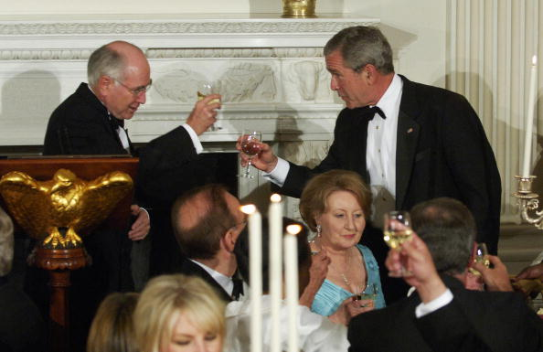
Getty Images
Where: Australian Ambassador's Residence, Washington DC, United States
Type: Official bilateral (United States)
Bush presented trees from the White House to Howard at the Australian Embassy in Washington. Howard considered them a “wonderful symbol of friendship”.
Where: Busan, South Korea
Type: Informal (APEC)
Howard and Bush both attended the APEC summit in South Korea but only had time for a brief informal meeting and photo.
Getty Images
Where: Oval Office, Washington DC, United States
Type: Official bilateral (United States)
George and Laura Bush hosted John and Janette Howard at the White House for “a true family lunch”. The leaders had an Oval Office meeting and discussed Iraq and Afghanistan as well as their shared commitment to freedom and democracy.
President Bush was inaugurated President for the second time on 20 January 2005
Where: Santiago, Chile
Type: Sideline meeting (APEC)
Howard met with Bush on the sidelines of APEC in Santiago. They discussed the US-Australia Free Trade Agreement, North Korea, and China’s regional role.
The Howard Government was re-elected on 22 October 2004
Where: Oval Office, Washington DC, United States
Type: Official bilateral (United States)
Bush welcomed Howard to the White House for an Oval Office meeting. They discussed the coalition’s progress in Iraq and the deepening of bilateral economic relations between Australia and the United States.
Where: Parliament House, Canberra, Australia
Type: Official bilateral (Australia)
Bush addressed Australia’s Parliament while protestors chanted on its lawns in Canberra. Senators Bob Brown and Kerry Nettle were ordered out of the House chamber for protesting, as Bush praised Australia’s war efforts and reassured Senators that the two Australian prisoners in Guantanamo Bay would be “dealt with fairly.” During his 21-hour visit, Bush held private talks with Prime Minister Howard and opposition leader Simon Crean.
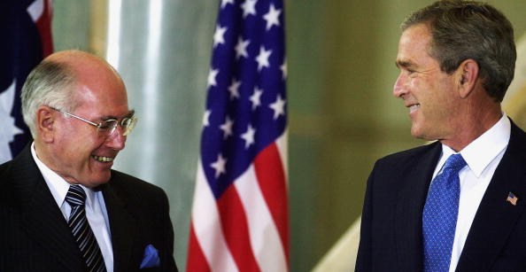
Getty Images
Where: Bangkok, Thailand
Type: Informal (APEC)
Howard and Bush attended the APEC meeting in Bangkok.
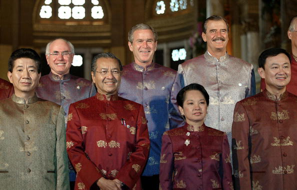
Getty Images
Where: Crawford, Texas, United States
Type: Official bilateral (United States)
Bush and First Lady Laura invited John and Janette Howard to their ranch in Crawford, Texas for an overnight visit. Operation Iraqi Freedom was the main item on the agenda, with the leaders also discussing the Bali bombings and developments on the Korean Peninsula. The setting was informal and Bush took Howard “for a good walk” around the ranch. The president famously labelled his Australian counterpart a “man of steel”.
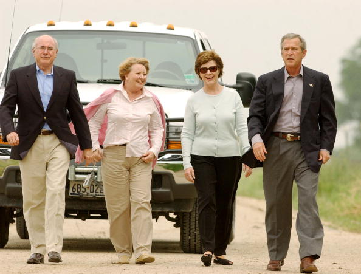
Getty Images
Howard had a brief discussion with Bush where the leaders discussed Iraq and the Security Council.
Where: Oval Office, Washington DC, United States
Type: Official bilateral (United States)
On his second trip to Washington in the Bush era, Howard addressed a Joint Sitting of Congress before meeting with the President the following day. The joint press release describes their discussions, which focussed on Iraq as well as the importance of bilateral trade.
The Howard Government was re-elected on 26 November 2001
Where: Shanghai, China
Type: Informal (APEC)
Howard and Bush were both at APEC in China, and managed time for a joke and a photo.
Where: Oval Office, Washington DC, United States
Type: Official bilateral (United States)
Two days prior to the September 11 attacks, Howard hosted a barbecue at the Australian Ambassador’s residence for Bush and several of his Cabinet members, including Vice President Dick Cheney, Secretary of State Colin Powell, and two Supreme Court Justices. The next day, the two leaders commemorated the 50th anniversary of the US-Australia alliance at the Washington Navy Yard before heading to the Oval Office for their first official meeting. Following the terrorist attacks, Howard attended a sitting in Congress before invoking Article IV of the ANZUS Treaty on September 14, committing Australia to America’s defence.